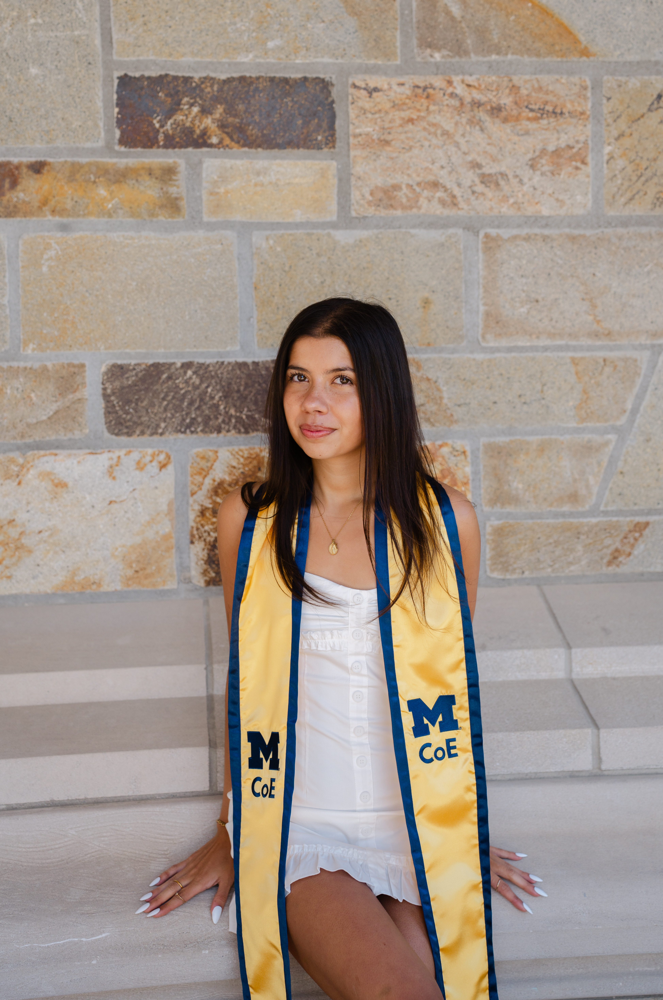
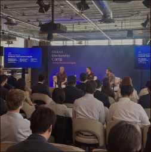
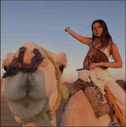
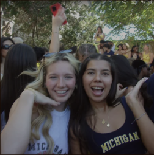

About Me
Tech x
Culture x
Strategy




My Work
AI-Assisted Visual Prototyping
Source a Pinterest image with a girly, ballet-pink mood that felt on-brand for PINK.
Used AI + Canva to prototype how the mood could translate into branded content, swapping in a product to test how product could live inside that aesthetic.
Why this works: Reinforces PINK's playful, feminine identity while showing product in a lifestyle-driven, trend-relevant context.
My Work
Food Photography
My Work
Memes for Branding
Last month, I had a Coffee Chat with Sydni, who runs Bloom Nutrition's “Bloom Unfiltered” account. I learned how a dedicated meme page can help brands be funnier and more culturally relevant than their main account allows.
My Work
Tik
My Work
Midnight Snacking Campaign
There's a whole romanticized world around midnight snacking. The high of eating something ridiculous alone in the kitchen, the creative freedom of a 2am concoction, and the shared humor of catching a roommate or dad doing the same thing.
On My Work
Current Favs
1. Bedazzle Trend.
Once Kylie does it, I want to too.
Funny content first. Product second.